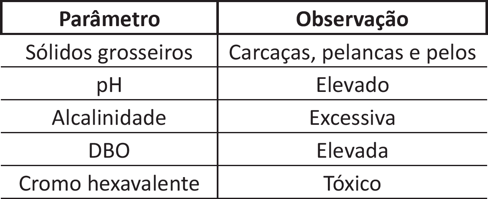

Os curtumes são responsáveis por transformar a pele animal em couro, em diferentes etapas. Durante
Oo processo, várias correntes de efluentes são geradas, pois diferentes reagentes são empregados para a
obtenção do produto final.
Considere que um engenheiro tenha sido contratado por uma empresa para projetar uma estação de
tratamento de efluentes de um processo de curtume, devendo, portanto, o efluente tratado atender aos
padrões vigentes da legislação.
Considere, ainda, que ao caracterizar tal efluente, o engenheiro tenha se deparado com os parâmetros
mostrados abaixo, de forma qualitativa.

A partir das informações apresentadas, avalie os possíveis procedimentos a serem adotados pelo mencionado
engenheiro.
-
Segregar os efluentes, principalmente os que eram provenientes do curtimento; submeter os efluentes
do curtimento a precipitação alcalina, para remover o cromo sob a forma de hidróxido de cromo
trivalente e encaminhar o sobrenadante para as demais etapas.
-
Desprezar, no tratamento preliminar, a instalação de grades e caixas de gorduras, para remoção dos
sólidos em suspensão e possíveis teores de óleos e graxas provenientes de sebos.
-
Realizar tratamento químico à base de sulfato ferroso, que remove parte da matéria orgânica e
alguns metais residuais, como, por exemplo, o cromo, por precipitação alcalina, deixar a cal existente
precipitar sob a forma de sulfato de cálcio e providenciar a secagem, em filtro prensa, do lodo gerado.
-
Realizar tratamento químico, que se mostra suficiente para reduzir totalmente a carga orgânica
apresentada.
São adequados os procedimentos indicados apenas em
-
I e II.
-
I e III.
-
III e IV.
-
I, II e IV.
-
II, III e IV.